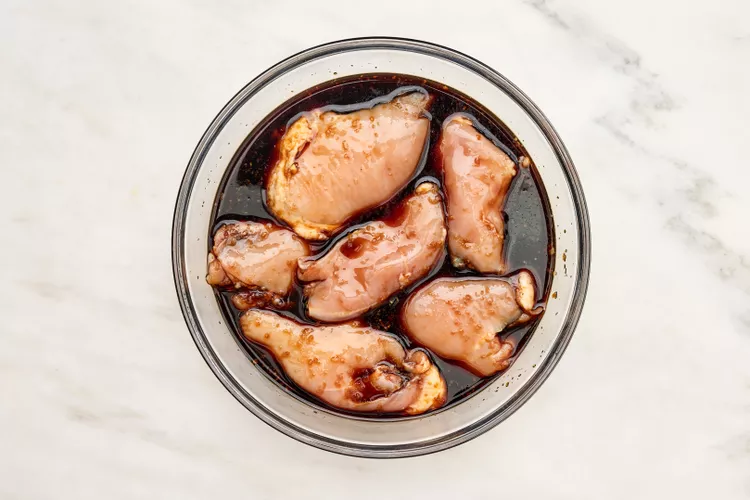

Stir together the soy sauce, sugar, mirin, ginger, and garlic in a large bowl. Add the chicken and toss to coat. Cover tightly with plastic wrap and place in the refrigerator for at least 20 minutes or up to 1 hour (beyond that, the high concentration of soy sauce can affect the texture of the chicken).
Prepare the noodles according to package directions.

Chop the scallions, separating the white and pale green parts from the dark green parts; set aside.
Remove the chicken from the refrigerator. Set a colander or large strainer over a bowl and drain, allowing the excess to drip off. Reserve 1/4 cup marinade; discard remaining marinade. Heat 2 tablespoons of the oil in a large nonstick skillet over medium-high. Add the chicken and cook until golden brown on both sides and a thermometer inserted into the chicken registers 165°F, 4 to 5 minutes per side. Transfer to a medium bowl.
Heat the remaining 1 tablespoon oil in a large Dutch oven over medium-high. Add the chopped white and pale green scallions; cook, stirring occasionally, until fragrant and translucent, about 1 minute. Add 1/4 cup reserved marinade to the Dutch oven. Cook, stirring occasionally, until the sauce is thickened, about 2 minutes. Gradually add the broth, stirring constantly, until combined. Bring to a boil over high.
While the broth is coming to a boil, shred the chicken into bite-size pieces using two forks. Add the shredded chicken and its accumulated juices to the Dutch oven and bring back to a simmer over medium.

Add the bok choy and mushrooms to the Dutch oven and cover. Reduce the heat to a simmer over medium; cook, covered, until the bok choy stalks and mushrooms are tender, 3 to 5 minutes.
Add the cooked noodles to the Dutch oven and stir to combine. Divide the soup among 4 bowls, sprinkle with the dark green scallions, and serve. You can store the soup in an airtight container for up to 4 days, or freeze it for up to 3 months.